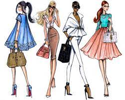
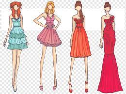

¿Qué son Tendencias?

Las tendencias nacen junto con la modernidad, son la consecuencia de los grandes cambios observados desde finales del siglo XVIII en los ámbitos económicos, tecnológicos y sociológicos.

La predicción de tendencias es utilizada por tanto por los compradores como diseñadores, en apoyo de la producción y la compra de lo que se prevé será tendencia generalizada en temporadas venideras.

Es un ciclo que produce un comportamiento adoptado temporalmente por un grupo social que lo percibe como apropiado para la época y la situación.